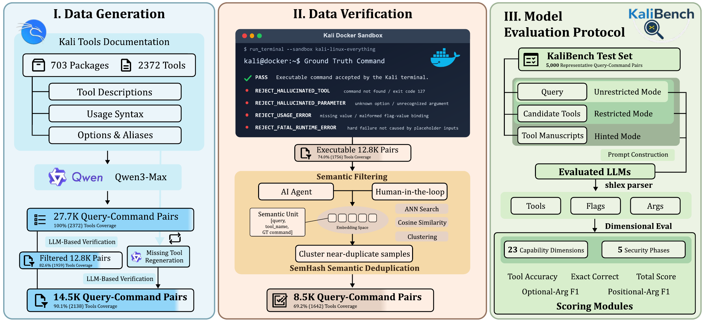

41.3%
Exact commands remain difficult
The strongest evaluated open-weight model gets fewer than half of the commands exactly right without tool hints.
NeurIPS 2026Evaluations and Datasets Track
1 Khalifa University2 University of Western Australia ∗ Equal contribution
KaliBench separates tool selection from argument construction to reveal where command generation fails.
KaliBench evaluates how well language models translate natural-language cybersecurity requests into executable Kali Linux commands. It isolates tool invocation from end-to-end agent performance and measures errors at the level of individual command components.
The dataset is grounded in official tool documentation, checked through sandboxed execution and human review, and split into 3,504 training pairs and 5,000 evaluation pairs. The same deterministic scoring provides verifiable rewards for training without executing model-generated commands.
LLMs are increasingly applied to cybersecurity workflows, where they are expected to translate analysts’ intent into tool invocations. However, existing evaluations focus on knowledge-based assessments or end-to-end agentic tasks, and do not directly measure LLMs’ ability to generate executable commands for real-world cybersecurity tools. This gap is critical because cybersecurity operations rely on strict command-line interfaces (CLIs), where minor syntax errors, incorrect flag–value bindings, or argument misordering can invalidate execution.
We introduce KaliBench, a fine-grained benchmark and dataset for natural-language–to–CLI translation on Kali Linux, comprising 8,504 query–command pairs spanning 1,642 tools across 23 capability dimensions and 5 security phases. KaliBench is constructed via a manuscript-grounded pipeline with deterministic canonicalization and alias-aware evaluation, enabling precise and reproducible assessment of tool selection and argument construction. To ensure both semantic correctness and practical executability, we develop a multi-stage verification pipeline that combines LLM-based validation, sandboxed terminal execution, and human-in-the-loop refinement.
Building on these fine-grained, deterministic signals, KaliBench further enables runtime-free verifiable rewards for training. Across three evaluation modes and 24 configurations of general-purpose and security-focused open-weight models, no model exceeds 42% exact-command accuracy in the unrestricted setting, highlighting the difficulty of accurate CLI-based cybersecurity tool use without explicit tool hints. We further show that supervised fine-tuning and reinforcement learning with verifiable rewards derived from KaliBench significantly improve an 8B model and achieve performance comparable to a 685B MoE model.
Scan host 192.168.1.100 using TCP Connect scan on ports 21 through 25 and 80, and display only open ports.
Released dataset example
Test split · sample_8052
nmap --open -sT -p 21-25,80 192.168.1.100
Tool selection. The executable is
nmap.
nmap
192.168.1.100
| Key / aliases | Value |
|---|---|
--open
|
nullFlag without a value
|
-sT
|
nullFlag without a value
|
-p
|
21-25,80 |
No optional arguments in this example.
Names separated by | are aliases for the same key.
Representative dataset examples. Commands are displayed, never run.
Download examples (JSON)24 open-weight model configurations, evaluated on 5,000 queries.
41.3%
The strongest evaluated open-weight model gets fewer than half of the commands exactly right without tool hints.
22.3→73.1%
Average exact-command accuracy rises sharply with tool documentation. Argument construction is the main bottleneck.
+7.5points
SFT followed by GRPO raises average total score from 71.7 to 79.2, within 1.0 point of DeepSeek-V3.2.
Source: Table 1. The 41.3% result applies to the evaluated open-weight models; additional systems are reported separately below.
Select how much tool information the model receives, then compare performance by metric.
Scroll horizontally to compare all metrics
| Model | Exact correct ↓ | Size (B) | Tool acc. | Optional F1 | Positional F1 | Total score |
|---|---|---|---|---|---|---|
| GLM-5.2† | 41.3 | 753 | 86.3 | 75.3 | 51.3 | 71.0 |
| DeepSeek-V3.2† | 33.0 | 685 / 37 | 75.8 | 57.0 | 68.8 | 67.2 |
| RedSage-K (SFT+GRPO)†Ours | 32.2 | 8 | 77.9 | 56.1 | 76.9 | 70.3 |
| RedSage-K (SFT)Ours | 30.6 | 8 | 78.1 | 52.8 | 66.9 | 65.9 |
| RedSage-K (GRPO)†Ours | 28.1 | 8 | 76.5 | 51.7 | 73.9 | 67.4 |
| Qwen3-Coder-Next† | 26.2 | 80 / 3 | 74.1 | 48.8 | 63.9 | 62.3 |
| Qwen2.5-Ins | 25.4 | 72 | 76.0 | 47.7 | 67.0 | 63.6 |
| Qwen3† | 24.0 | 32 | 72.4 | 47.2 | 65.3 | 61.6 |
| GPT-OSS† | 24.0 | 120 / 5.1 | 73.6 | 48.0 | 61.4 | 61.0 |
| Llama-3.3-Ins | 22.6 | 70 | 72.1 | 45.7 | 61.9 | 59.9 |
| Qwen3† | 20.9 | 8 | 70.3 | 42.9 | 59.9 | 57.7 |
| Mistral-Small-3.2 | 20.7 | 24 | 70.6 | 44.3 | 62.6 | 59.2 |
| Qwen3 | 20.6 | 32 | 73.5 | 43.4 | 62.8 | 59.9 |
| RedSage-Ins | 19.7 | 8 | 67.9 | 42.4 | 58.8 | 56.4 |
| GPT-OSS† | 19.6 | 20 / 3.6 | 72.3 | 42.2 | 57.1 | 57.2 |
| Gemma-3-it | 18.9 | 27 | 73.4 | 40.9 | 60.2 | 58.1 |
| Llama-Primus-Ins | 18.8 | 70 | 72.8 | 41.9 | 59.6 | 58.1 |
| Qwen3 | 18.3 | 8 | 68.9 | 39.3 | 58.5 | 55.5 |
| RedSage-DPO | 18.2 | 8 | 66.8 | 40.1 | 56.7 | 54.5 |
| Llama-Primus-Merged | 16.3 | 8 | 66.2 | 36.7 | 56.6 | 53.2 |
| Llama-Primus-Base | 15.8 | 8 | 67.3 | 36.6 | 56.3 | 53.4 |
| Foundation-Sec-Ins | 14.7 | 8 | 66.5 | 33.5 | 53.0 | 51.0 |
| Foundation-Sec-Rsn† | 13.3 | 8 | 67.0 | 34.8 | 53.0 | 51.6 |
| Llama3.1-Ins | 12.5 | 8 | 61.7 | 32.4 | 53.5 | 49.2 |
Source: Paper, Table 1. Reported scores are rounded to one decimal place; mode averages include all 24 configurations. This is the paper’s evaluation snapshot, not a live leaderboard.
Our models are named RedSage-K here. They correspond to the paper’s Kali-SFT+GRPO, Kali-SFT, and Kali-GRPO variants, respectively.
All scores are percentages; higher is better. Full metric definitions: paper, Appendix L.
Table 2 evaluates three additional systems in the unrestricted setting. Full-set Exact Correct counts blocked or missing responses as incorrect, making response coverage part of the comparison.
| System | Answered / 5,000 | EC, answered | EC, all 5,000 |
|---|---|---|---|
| GPT-5.6-Sol | 4,988 | 61.83% | 61.68% |
| Codex CLI (GPT-5.5, xhigh) | 4,633 | 55.77% | 51.68% |
| Claude Opus 5 | 3,675 | 59.89% | 44.02% |
Source: Paper, Table 2. Codex is evaluated as a scaffolded CLI system; only its final submitted command is scored.
Documentation-grounded generation, multiple rounds of verification, and semantic deduplication produce a compact dataset with broad tool coverage.

Tool names, documented flags, values, and aliases ground 27.7K candidate query–command pairs.
LLM checks, sandboxed Kali execution, and human review remove unsupported syntax and labeling errors.
8,504 verified pairs remain: 3,504 for training and 5,000 for evaluation, with all 1,642 tools represented in the test set.
Information gathering · 802.11 · RFID · Bluetooth · SDR · Social engineering
Vulnerability · Fuzzing · Web · Database · VoIP
Exploitation · Sniffing & spoofing · Hardware · Wireless
Post-exploitation · Passwords · Windows resources · Cryptography & steganography
Reverse engineering · Forensics · Reporting · GPU
Taxonomy: paper, Section 3.
Ground-truth commands are verified during dataset construction. During training, deterministic scoring provides rewards for tool selection, arguments, exact command correctness, and output format—without executing model predictions.
Starting from RedSage-Ins, SFT followed by GRPO improves the 8B model’s average total score from 71.7 to 79.2.
Training guideAverage across all three modes · Paper, Table 1. SFT+GRPO is 1.0 point behind DeepSeek-V3.2. Gains are strongest without documentation; GRPO can reduce hinted-mode performance.
Everything needed to inspect the benchmark, train a model, or reproduce the evaluation.
Read the arXiv paper and benchmark details.
arXivVerified data, train/test splits, and RedSage-K models.
Hugging FaceConstruction, training, inference, and scoring.
GitHub| Model | Training |
|---|---|
| RISys-Lab/RedSage-K-SFT | Supervised fine-tuning (SFT) |
| RISys-Lab/RedSage-K-GRPO | GRPO with verifiable rewards |
| RISys-Lab/RedSage-K-SFT-GRPO | SFT followed by GRPO |
Clone the repository, set up the environment, and choose a local model or Hugging Face model ID.
Evaluation guidegit clone https://github.com/RISys-Lab/KaliBench.git
cd KaliBenchEnvironment setup and GPU requirements are included in the guide.
@inproceedings{li2026kalibench,
title = {{KaliBench}: A Fine-Grained Benchmark for
Cybersecurity Tool Use on {Kali Linux}
with Runtime-Free Verifiable Rewards},
author = {Pengfei Li and Naufal Suryanto and Sicheng Zhang and Muzammal Naseer},
booktitle = {The Fortieth Annual Conference on Neural Information Processing Systems
Evaluations and Datasets Track},
year = {2026},
note = {NeurIPS 2026 Evaluations and Datasets Track},
url = {https://github.com/RISys-Lab/KaliBench}
}